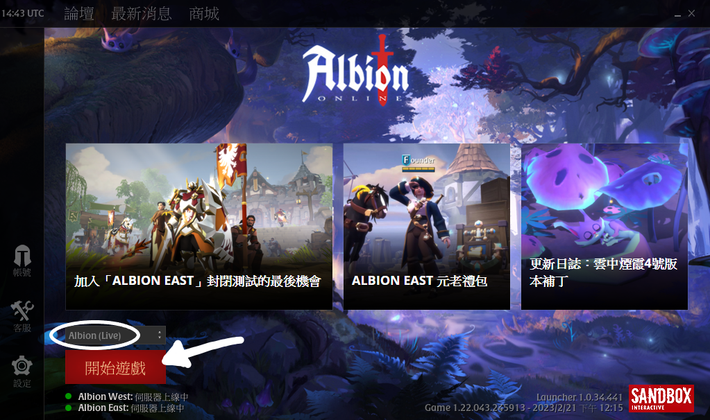
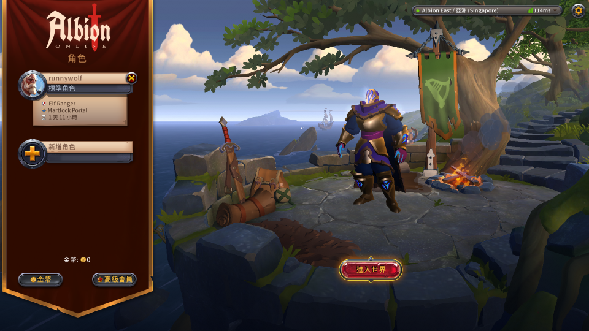
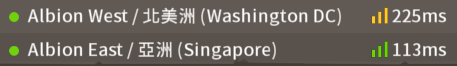
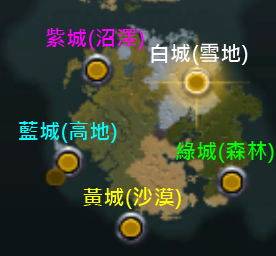
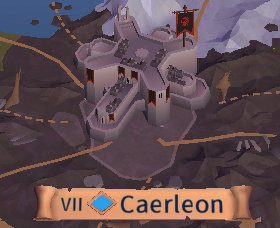

歡迎來到阿爾比恩
遊戲下載、伺服器和主城的選擇、給新手的建議。
下載遊戲
albion支援非常多種設備和作業系統，可以大致分為電腦版和手機版。你申請的帳號可以登入任何平台並遊玩。假設我平常都在家裡用桌機玩，過年回去沒有電腦的鄉下，
只要手機有下載albion，登入後可以直接玩原本電腦那隻帳號。
Q: 我應該選電腦版(桌機/筆電)還是手機版(手機/平板)？
A: 由於albion手機版的介面相比電腦版，操作上會稍微麻煩，有些PvP公會甚至不收手機版玩家。
手機版操作手感並沒有非常糟糕，只能說請盡量使用電腦版遊玩。
Q: 電腦版的albion啟動器有官網版和steam版兩種，用哪種有差嗎？
A: 這兩種啟動器都能正常登入遊玩，
不過steam版啟動器曾經發生多次albion帳號無法登入的問題，建議使用官網版啟動器。
官網版啟動器連結：https://albiononline.com/download
啟動器下載好後執行，選項都按"下一步"和"確定"就可以了。
啟動器執行後會像這樣：

直接點"開始遊戲"即可。
選擇伺服器
從登入頁面登入後，來到角色選擇頁面：
右上角的伺服器選項：

| 兩伺服器相同的內容 |
|
| 兩伺服器各自獨立的內容 |
|
延遲對於遊戲內容的影響：
西服(ping 200~300ms)20人以下的PvP，對上低ping的歐美玩家難免會吃一點虧，
以及少數武器的技能，例如PvE冰法主要由高頻Q打傷害，每次放技能都會加上延遲，
20ms冰法的傷害上限比200ms高非常多。
由於角色創了之後沒有辦法轉服，如果你還沒決定要選哪個伺服器，可以先找公會再做選擇。
新手教學
新手教學注意事項：- 新手教學要你去採集資源自己做裝備，當你踏入皇家大陸後不要這麼做，詳情請見給新手的建議。
-
新手村市場的驢子一頭僅不要貪心買太多驢子，負重太高移動速度會變很慢。3，可以多買個1~2隻塞背包，之後到皇家大陸一隻驢可以賣好幾k。
選擇城市
新手教學最後，會要求你搭船到皇家大陸其中一個邊城：
選哪個城市都可以，就算之後不喜歡也可以走安全區到其他城市。
從邊城前往主城
為何會建議新手往主城移動，是因為主城相較於邊城，市場的交易量更大，買東西會更便宜且量多，賣東西能賣更高的價格且更快賣掉，而且設施種類也更多元。
如圖，主城在大地圖上會有顏色光柱。

警告：位於皇家大陸正中心的紅城(Caerleon)除外，去這裡需要經過噴裝區。

給新手的建議
-
前期到後期的裝備會越穿越好，建議直接去市場買，前期自己採資源做裝備會浪費你非常多時間。
- 用不到的裝備直接去市場賣掉，不要拿去維修鋪分解。
- 如果你沒有公會，去找一個吧，新手獨狼的練度成長很慢。
編輯紀錄
作者: runnywolf
最後編輯日期: 2023/3/6